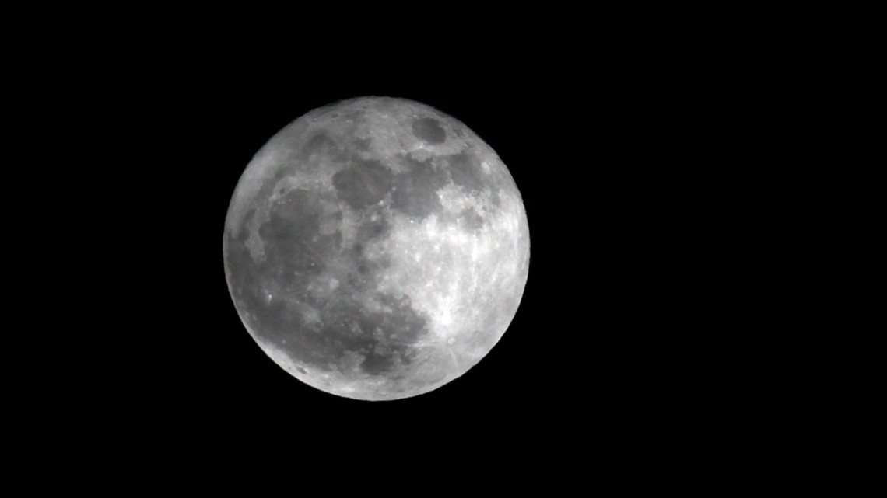

A Super Worm Moon will dominate the sky tonight
Stargazers of all ages stepping outside on Monday night will be able to see the final full moon of winter, one that will appear slightly larger and brighter than all the others throughout the season. Monday night's full moon is the first of three big astronomy events taking place this month, and it will be the easiest of the three to see, unless Mother Nature spreads a blanket of thick clouds across the sky. The moon will rise on the evening of Monday, March 9, in the eastern sky, a little over a week before the official start to spring on March 19. March is a transitional month with the days growing longer and warmer as the Northern Hemisphere heads into spring. The changing environment has inspired the nickname given to March's full moon. "At this time of the year, the ground begins to soften enough for earthworm casts to reappear, inviting robins and other birds to feed-a true sign of spring," the Old Farmer's Almanac explained on their website. This is just one of many nicknames that has been given to March's full moon over the years. "One such name was the Full Sap Moon, as this is the time of year when the sap of sugar maples starts to flow," the Old Farmer's Almanac continued. Other nicknames include the Crust Moon, the Crow Moon, the Lenten Moon and the Sleepy Moon. This year, March's full moon will be more than just a Worm Moon; it will also be considered a supermoon. A supermoon is a word that has gained popularity in recent years to describe a full moon that appears slightly bigger and brighter than normal. This is because the full moon will fall near perigee, the point in the moon's orbit when it is closest to the Earth. This change in appearance is very minimal and is only able to be detected in side-by-side photos of the supermoon compared to other full moons throughout the year. Read Full Article Here